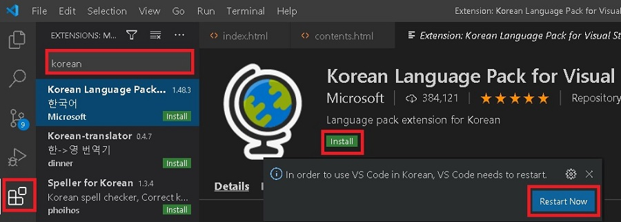

파일 > 기본설정 > 설정 > 텍스트 편집기 : 글꼴
D2Coding, NanumGothic 추가하기, 글자크기도 함께 변경
영어 > 한글 변경과 동일하게 검색하여 설치
1.colorize - 색상텍스트에 색이 직접 보여진다.
2.color info - 색상코드에 커서를 가져가면 color picker 창이 열립니다.
3.Highlight Matching Tag - 시작과 종료 태그를 색상으로 식별합니다.
4.Bracket Pair Colorizer 2 - 일치하는 대괄호를 색상으로 식별. (depth가 같은 영역 표시합니다)
5.Auto Rename Tag - HTML에서 한쪽 태그를 수정하면 나머지 반대쪽 상응하는 태그를 함께 수정해 줍니다.
6.image preview - 라인넘버 왼쪽에 작은 썸네일 생성,
이미지 주소에 마우스 오버하면 보여짐, ctrl + 이미지 클릭하면 새창으로 이미지만 보여집니다.
7.Path Intellisense - 경로 자동 완성합니다.
8.Beautify - shift + alt + B 자동정렬합니다.
9.View In Browser - 사이드바에서 파일을 선택하고 마우스 오른쪽 View In Browser 선택합니다.
10.Live Server - ctrl + L 잠시 뒤 ctrl + O, 오른쪽 하단 Go Live를 클릭해도 됩니다.
11.google fonts - F1 선택후 goog => link인지 @import 인지 선택 => 서체명 입력하면 자동완성됩니다.
12.HTML Snippets - HTML Snippets 설치합니다.
Editor:Word Wrap - On.
Editor > Minimap: Enabled 해제합니다.
Editor:Show Folding Controls - always
HTML Snippets 설치하였다면,
C:\Users\사용자\.vscode\extensions\abusaidm.html-snippets-0.2.1\snippets 폴더에서
아래의 snippets.json 파일을 교체합니다.
C:\Users\New\.vscode\extensions\abusaidm.html-snippets-0.2.1 폴더에서
package.json 파일 내용 변경합니다.